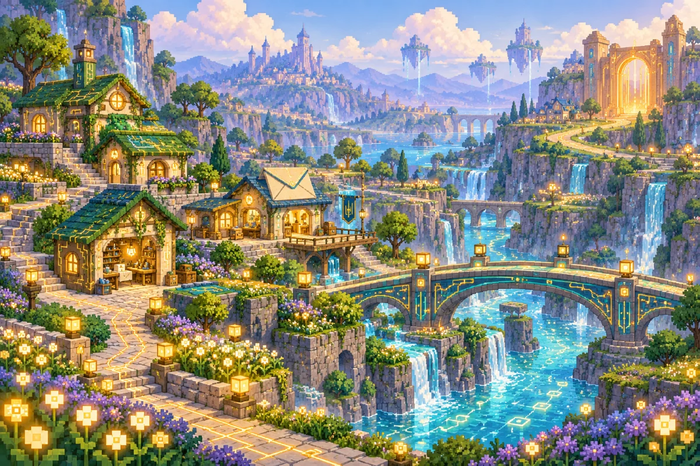
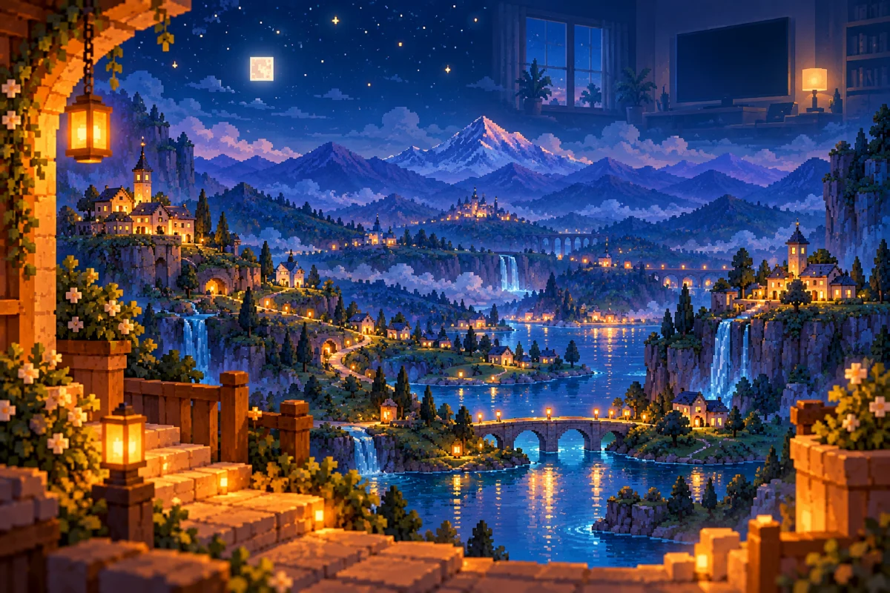

01 / O PRVOM SVETLE
Bodka, ktorá si zapamätala ráno
Dávno predtým, než mali svetelné cesty svoje mená, ležala za obrazovkami tichá krajina. Neboli v nej domy ani mosty, iba nespočetné drobné miesta, na ktorých sa mohlo rozsvietiť svetlo. Ľudia videli na svojich obrazovkách obrazy. Za nimi však zatiaľ nebolo nikoho, kto by sa na tie obrazy pozeral z druhej strany.
Najstaršie pixelkovské kroniky hovoria o jednej zlatej bodke. Rozžiarila sa vo chvíli, keď sa na dávnej obrazovke objavilo ranné slnko. Obraz sa zmenil, no v bodke zostala spomienka na jeho teplo. Keď sa vedľa nej rozsvietila ďalšia, priblížila sa k nej. A keď tretia zablikala sama na opačnom konci tmy, obe sa vydali za ňou.
Tak sa podľa povesti narodili prví Pixelkovia: zo svetla, ktoré si niečo zapamätalo, a z túžby nebyť osamote. Nemali ešte veľa vedomostí. Vedeli však počkať na pomalšieho, rozdeliť sa o jas a všimnúť si toho, kto zostal bokom. Z týchto drobných zvykov neskôr vyrástol celý ich svet.

Mapa knižky 7 kapitol a sedem priateľov
02 / KRAJINA ZA SKLOM
Kotlina pod Tisícimi oknami
Domov Pixelkov sa rozprestiera tam, kde by človek čakal iba súčiastky a tmu. Zo sklenenej strany ho chránia Tisíce okien: drobné svetelné políčka, cez ktoré do krajiny prenikajú farby ľudských obrazov. Keď sa na televízore objaví more, po úbočiach prebehne modrý odlesk. Pri zábere na jesenný les sa strechy na okamih sfarbia do medi a zlata.
Uprostred kotliny leží mesto Jasnov. Domčeky má nízke, s priesvitnými strechami, a medzi nimi námestie vydláždené hladkými štvorčekmi. Na východe sa dvíhajú Medené terasy, kde Čipko skúma rozvetvené cesty obvodov. Na západe sa rozlievajú Ozvenové lúky. Miky tam rozoznáva prichádzajúci signál skôr, než na obzore zasvieti prvá správa.
Za poslednými záhradami vedú chodníky k vzdialeným obrazovkám. Na ľudskej mape by ich delilo iba pár izieb. Pre Pixelkov sú to dlhé kraje plné údoličiek, križovatiek a mostov. Na cestu si preto berú mapu, svetielko a dostatok času. Najkrajší výhľad sa vraj otvára z Prahu návratovej brány: večer odtiaľ vidno všetky okná Jasnova naraz.
03 / DOMOVY A OBYČAJNÉ DNI
Mesto, ktoré vonia po daždi zo svetla
Pixelkovia nestavajú svoje príbytky všetci rovnako. Pixi býva za žltými priesvitnými stenami, ktoré za úsvitu rozžiaria celú uličku. Mikyho okrúhly domček má mäkké steny, aby sa v ňom dali triediť aj celkom tiché zvuky. Pri Pingyho dverách stojí poštová zastávka s priehradkami na odkazy. Plugyho dielňu spoznáte podľa pevného prahu a starostlivo poukladaných spojov.
Jedlo pripravujú zo svetelných omrviniek. Sú to zatúlané záblesky, ktoré sa zachytávajú na okrajoch obrazov, a v ich kuchyniach z nich vznikajú chrumkavé štvorčeky i teplá zlatá kaša. V záhradách pestujú lampášové kvety. Po jemnom svetelnom daždi sa na ich listoch držia iskry a celé mesto vonia tak, ako ľuďom vonia chodník po letnej prehánke.
Nie každý deň prináša dobrodružstvo. Opravujú sa strechy, triedia zásielky a na námestí sa vymieňajú mapy. Najmenší Pixelkovia sa učia rozoznať domáce svetlo od cudzieho záblesku. Večer sa pri dverách necháva malý lampáš pre neskorých pocestných. Je to starý zvyk, starší než najstarší dom v Jasnove.

04 / CESTY, KTORÉ SPÁJAJÚ
Most sa končí až na druhom brehu
Rieky v kotline nenesú vodu, ale drobné kúsky správ. Z diaľky vyzerajú ako strieborné stužky; zblízka v nich možno rozoznať bodky, útržky farieb a mäkké ozveny hlasov. Pingy dohliada na to, aby každý odkaz dorazil na správne miesto a aby jeho koniec nepredbehol začiatok. Niektoré správy sú ľahké ako lístok, iné potrebujú celý sprievod.
Mosty cez tieto rieky drží pohromade presné spojenie. Plugy sa o každý spoj stará s trpezlivosťou záhradníka. Čipko preňho vyhľadáva pevné miesta a kreslí nové trasy. Pixi rozsvecuje orientačné body, aby cestu našli aj tí, ktorí ňou prechádzajú prvý raz. Piko nosí správy medzi všetkými tromi a v mape si zaznačuje, kto už dorazil.
Niekedy sa cesta rozpadne na neprehľadné kúsky. Odkaz príde bez konca, farby sa pomiešajú alebo sa ponad rieku rozhostí šum. Vtedy pomáha Mikyho sluch, Pingyho poriadok a Čipkova trpezlivosť. V Jasnove si cenia najmä takú opravu, po ktorej cesta vydrží aj pre ďalšieho pocestného. Samotná rýchlosť by bola málo.
05 / OCHRANNÉ POLE
Strážca, ktorý počíta navrátilcov
Na okraji obývaných krajov sa klenie Ochranné pole. Za dňa je sotva viditeľné, iba večer sa na ňom zachytáva oranžové svetlo. Neobopína kotlinu preto, aby v nej niekoho väznilo. Oddeľuje známe a overené cesty od nepreskúmaných prúdov, v ktorých by sa malý pocestný ľahko stratil.
O priechody sa stará Guardy, oranžový štít s tyrkysovou kravatou a žiariacou kľúčovou dierkou. Pozná znamenia domácich správ aj návratové znaky. Ak sa z cesty vracia poškodený odkaz, najskôr overí, čo z neho zostalo čitateľné. Keď si nie je istý, privolá ostatných. Jeho najväčšou silou nie je to, že by sa nikdy nebál, ale to, že zostáva pozorný aj vtedy, keď sa ponáhľa celá krajina.
Pri návratovej bráne stojí nízky kamenný prah. Guardy na ňom večer čakáva, kým sa zo vzdialených obrazoviek vrátia poslední priatelia. Piko mu pomáha počítať prichádzajúcich. Keď prejde aj siedmy, na bráne sa rozsvieti teplý oblúk. Až potom strážca zvesí lampáš a vyberie sa domov.
06 / NA DRUHEJ STRANE OBRAZOVKY
Veľké ruky, malé zemetrasenia
Ľudia o kotline väčšinou nevedia. Ráno otvoria notebook, večer vypnú televízor a niekedy pri upratovaní vytiahnu zariadenie zo zásuvky. V ich izbe sa zmení jediná drobnosť. Za obrazovkou sa však zatvorí vzdialený priechod a rieka správ na chvíľu stíchne. Ak práve niekto cestoval medzi dvoma brehmi, musí počkať na najbližšom bezpečnom mieste.
Pixelkovia sa preto naučili pozorovať ľudské dni. Poznajú večerné ticho aj ranné pripájanie. Pred zatvorením ciest si Pingy uloží nedoručené odkazy, Čipko poznačí nedokončené opravy a Guardy rozsvieti značky k úkrytom. Náhly výpadok im občas popletie poradie správ, no v dielňach už majú pripravené postupy, ako ho znovu nájsť.
Ľudia im pomáhajú aj celkom nevedomky. Dospelý obnoví nefungujúce pripojenie a cez kotlinu sa opäť natiahne most. Niekto si všimne chybu v odkaze a pokojne ho odošle znova. A občas sa nájdu deti, ktoré dokážu sledovať drobné stopy, spojiť roztratené časti a priviesť stratenú partiu k bráne. O takých pomocníkoch sa v Jasnove dlho uchovávajú mapy.

07 / NOČNÁ STRANA KRAJINY
Svetlo, ktoré vie aj odpočívať
Vypnutá obrazovka neznamená koniec Pixelkov. Keď ustane prúd nových obrazov, ich svet sa uloží do tichého odpočinku. Farby na kopcoch zmäknú, vzdialené cesty zhasnú a domčeky si uchovajú posledný teplý odlesk. Údolia sú vtedy pokojné ako zavretá kniha, ktorej príbeh nikam neodišiel.
Ľudia nemusia nechávať zariadenia zapnuté kvôli malým obyvateľom za sklom. Aj Pixelkovia potrebujú noc. Miky odloží slúchadlá, Pixi stlmí svoje svetlo a Čipko konečne prestane prerábať plán na zajtra. V Pingyho priehradkách čakajú odkazy, ktoré môžu pokojne počkať do rána. Plugy skontroluje posledný spoj a Piko sa vráti od Guardyho brány.
Keď sa nabudúce obrazovka rozsvieti, kotlina sa pomaly prebudí. Na Medených terasách sa otvoria dielne a po Ozvenových lúkach prebehne prvý ranný tón. Zo siedmich domčekov vyjdú priatelia, každý iný a každý potrebný. Nad Jasnovom sa zdvihne zlaté svetlo. Také isté, aké si kedysi zapamätala jedna maličká bodka.
A na konci každej svetelnej cesty bude zasa niekto čakať.